신부 이엄지 요청사항
아래는 신부 기준 요청사항입니다. 헤어·메이크업부터 촬영 내내 꼭 기억해 주세요!
- 안경 착장입니다.
- 메이크업은 광 XXX — 광 없이 뽀송하고 깨끗하게. 파워 지성이라 금방 번들거리는데, 최대한 광 없이 부탁드립니다.
- 눈썹이 보이는 풀뱅 앞머리 — 앞머리 철벽 고정 부탁드립니다!!
- 머리숱이 없는 편이고, 새로 자라는 머리 + 반곱슬로 지저분한 잔머리가 많은 편입니다.
- 왼쪽 어깨가 더 올라가는 경향이 있습니다. 어깨 내리고 허리 펴라고 계속 주의 주세요!!
신랑 나동규 요청사항
아직 정리된 요청사항이 없습니다. 정해지는 대로 업데이트하겠습니다.
☝️ 사진을 누르면 원본 크기로 크게 볼 수 있습니다.
촬영 순서
스튜디오에서 헤어·메이크업을 받고 바로 촬영을 시작한 뒤, 정동길로 이동합니다.
-
AM 11:00헤어 + 메이크업모스앤코튼 스튜디오 (아이엠메이크업 출장)
-
PM 1:00스튜디오 촬영 시작낮 · 해가 쨍한 · 밝은 분위기
-
이후 이동정동길 (시립미술관)야경 · 분위기 있는 무드

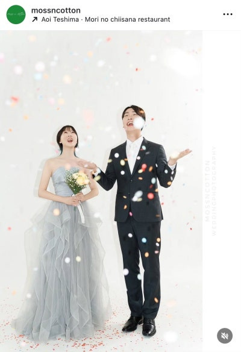
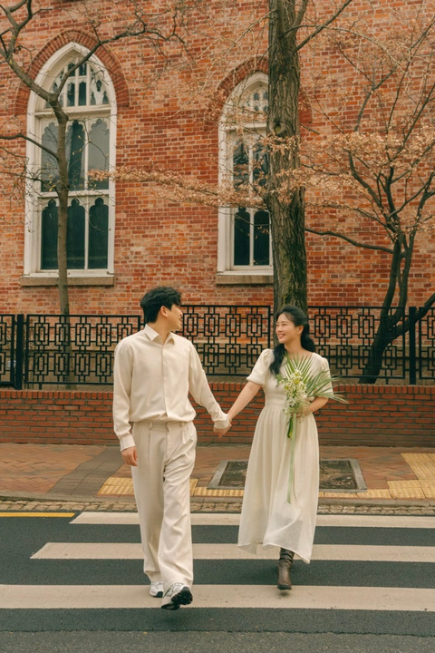
헤어 · 메이크업
신부 기준입니다. 안경을 쓰고 촬영하며, 전반적으로 광 없이 뽀송하고 깨끗한 느낌을 원합니다.
○ 좋아요!

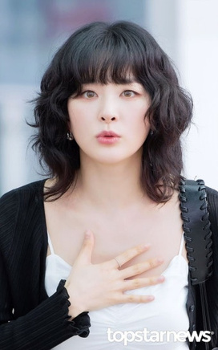
뽀송함 색조 과하지 않은
✕ 싫어요!


반들, 번들 광 XXXX 화려한 색조 X 빤짝이 X
○ 좋아요!


묶었을 때 깔끔한 목덜미 깔끔한 머리통 너무 많고 긴 잔머리는 불호지만, 적당한 잔머리는 좋습니다. 정수리 쪽에 자글자글한 잔머리가 많은 편인데, 최대한 자글거리지 않게 부탁드립니다.
✕ 싫어요!

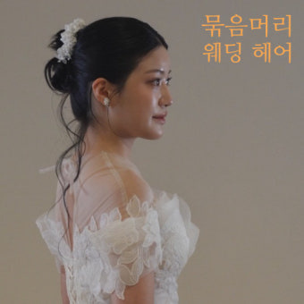
목덜미 잔머리 X 너무 긴 잔머리 X 너무 많은 잔머리 X 위 사진 같은 많고 긴 잔머리는 머리 묶다 만 느낌이라 선호하지 않습니다.
스타트 헤어 — 웨이브
컬이 굵게 들어간, 자연스럽고 공기감이 느껴지는 네츄럴한 느낌의 웨이브
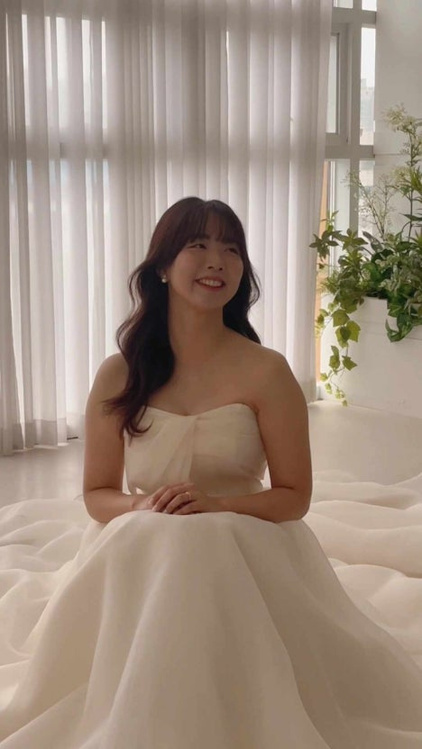
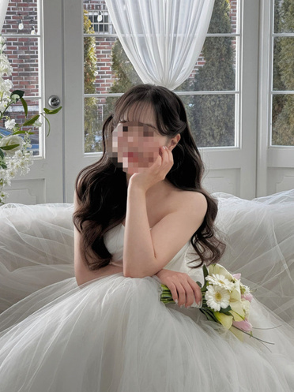
중간 진행머리 후보들
반묶음, 가시반묶음, 땋은 머리, 하이 포니테일 등 하늘색 홀터넥 롱 원피스입니다. 잘 어울리는 스타일로 추천 부탁드립니다.
마무리 헤어 후보들
반 오프숄더, 정면 리본 디테일이 있는 아이보리색 롱 원피스입니다. 잘 어울리는 스타일 추천 부탁드립니다.
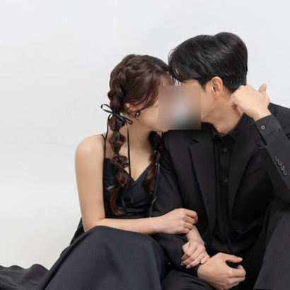

의상
총 세 벌로 진행합니다. 신랑 의상은 스튜디오 1-1 외에는 아직 확정 전이라 정해지는 대로 업데이트하겠습니다.
스튜디오 대여 드레스
스튜디오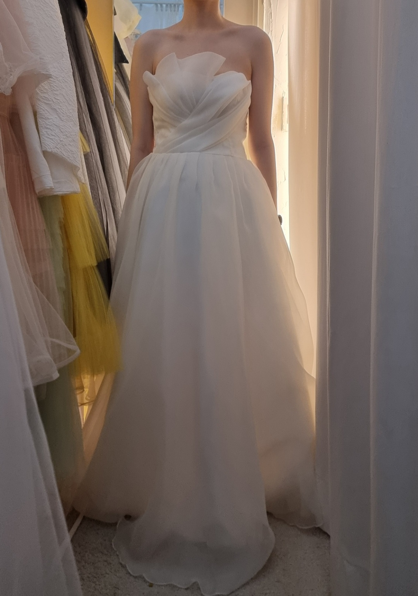
모스앤코튼 소장 스튜디오 대여 드레스
검정 구두
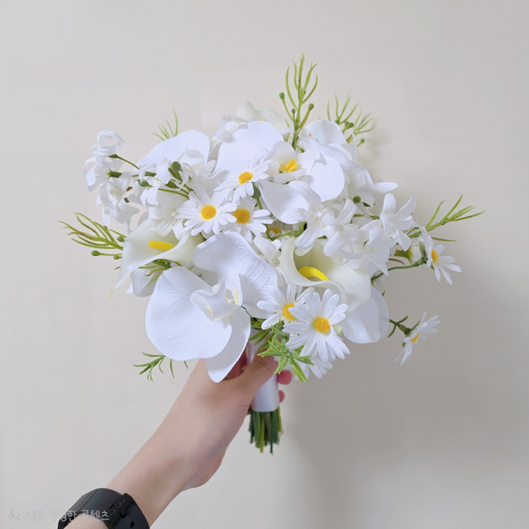
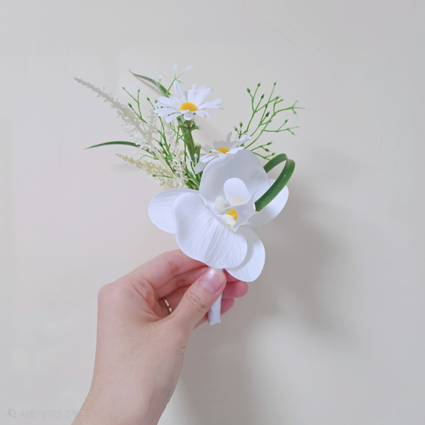
하늘색 홀터넥 원피스
스튜디오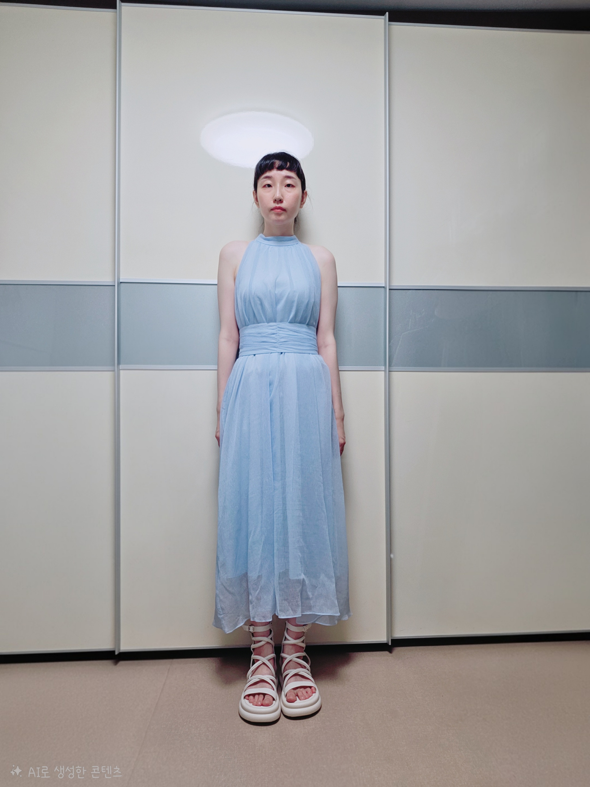
하늘색 홀터넥 원피스 하얀색 스트랩 샌들
미정
아이보리 리본 롱 원피스
정동길(시립미술관)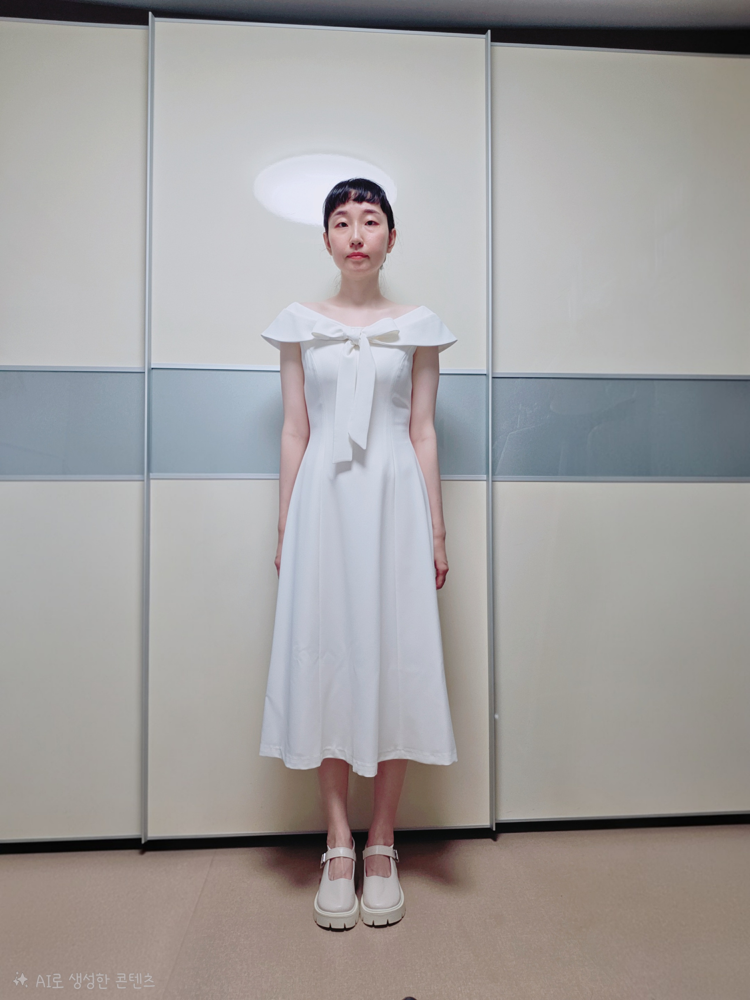
아이보리색 리본 롱 원피스 아이보리색 구두
미정
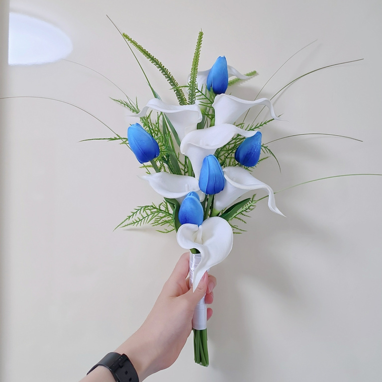
소품
저희가 직접 준비해 갑니다. 촬영 중 자연스럽게 활용해 주세요.
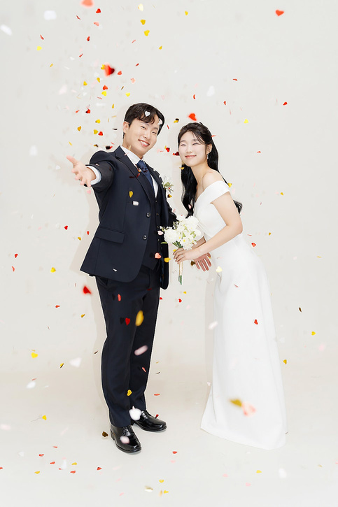
컨페티
동그라미 레인보우 컨페티

인형
드레스 곰 턱시도 곰
부케 — 하얀 색감
부토니에와 세트
부토니에
신랑 착용
부케 — 푸른 색감
의상 2와 함께
찍고 싶은 샷
전신샷, 상반신샷, 단독샷, 정면, 마주보기 등 골고루 부탁드립니다. 그 외에도 다양하게 추천 부탁드립니다!
하얀 배경
하얀 배경 정면 클래식 샷 (서서 / 앉아서)
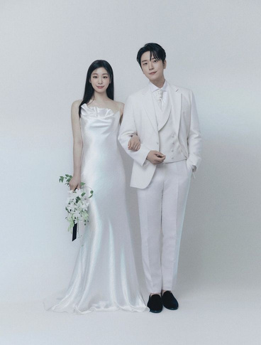
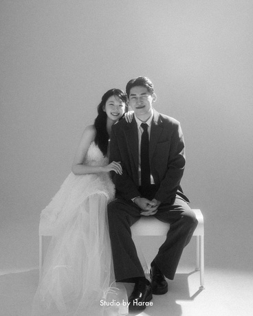
검은 배경
검은 배경 정면샷, 베일샷
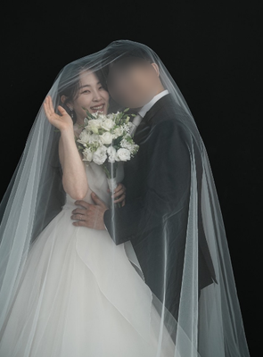
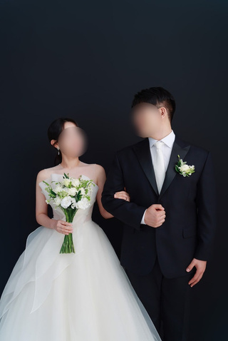
테이블 (+ 곰인형)
테이블에서 자연스러운 사진, 곰인형 활용샷
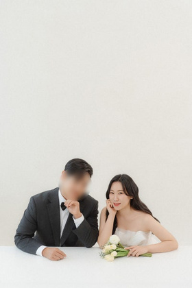
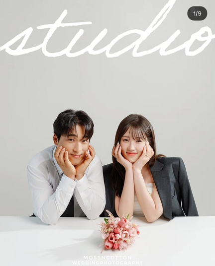
컨페티
유색 원피스 컨페티샷 (일어나서 / 앉아서)

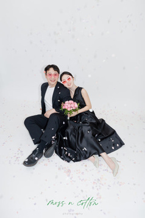
정동길 벽돌벽
신호등 건너기, 벽에 기대있기, 자연스럽게 걷기 등
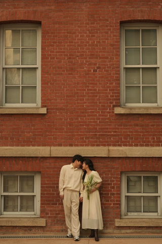
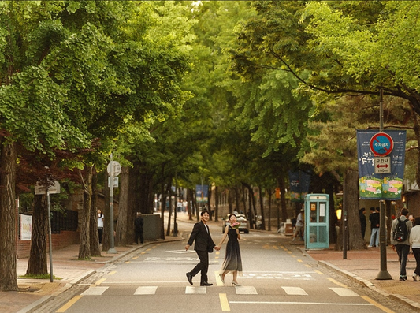
골목길
골목 골목에서 자연스럽게, 장난치거나 앉아있기 등
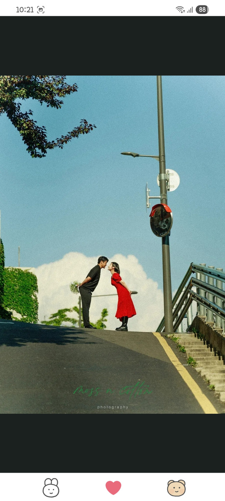
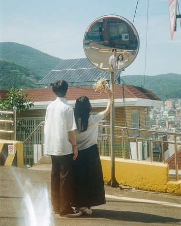
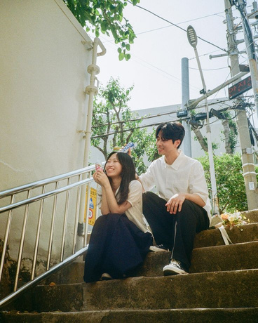
시립미술관
시립미술관 앞 정면
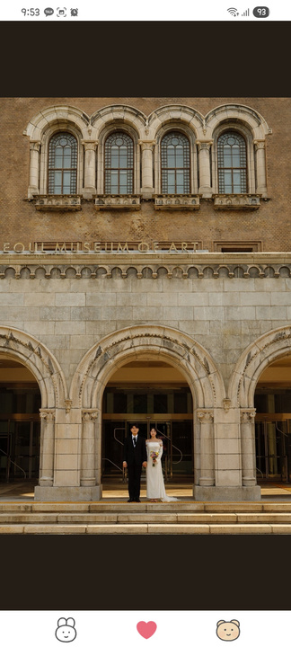
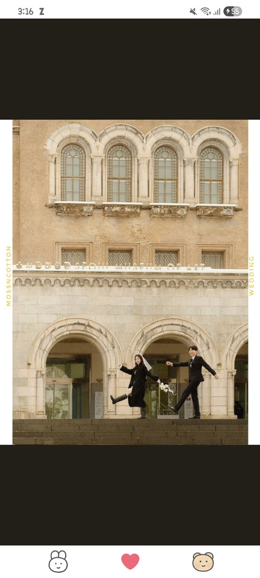
세실리아 옥상 전망대 가능하다면
코스가 가능하다면 여기도 찍고 싶습니다.
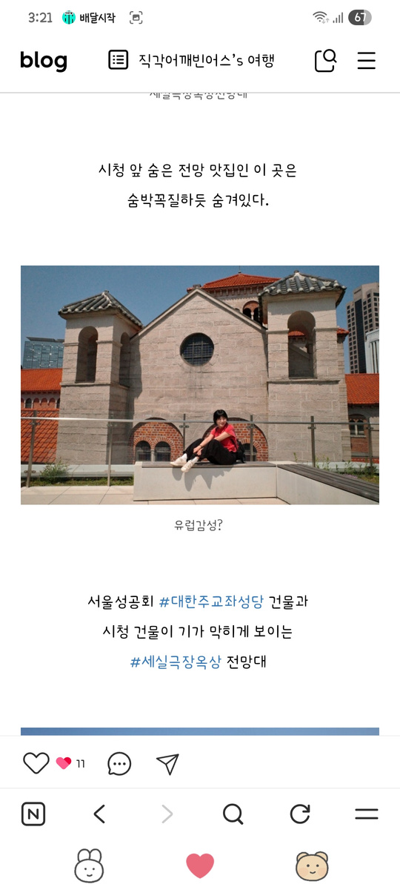
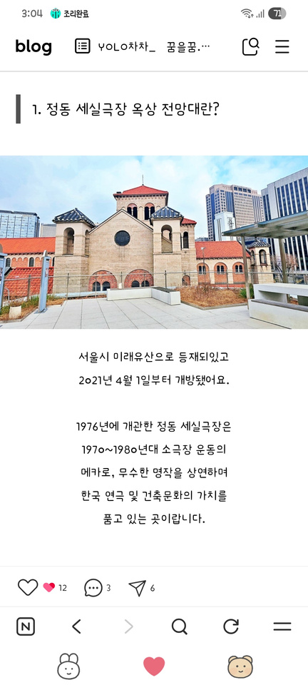
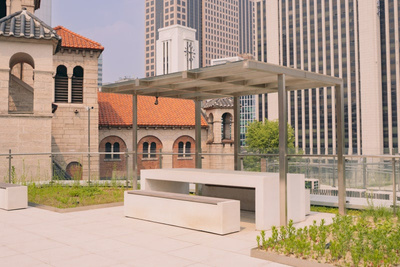